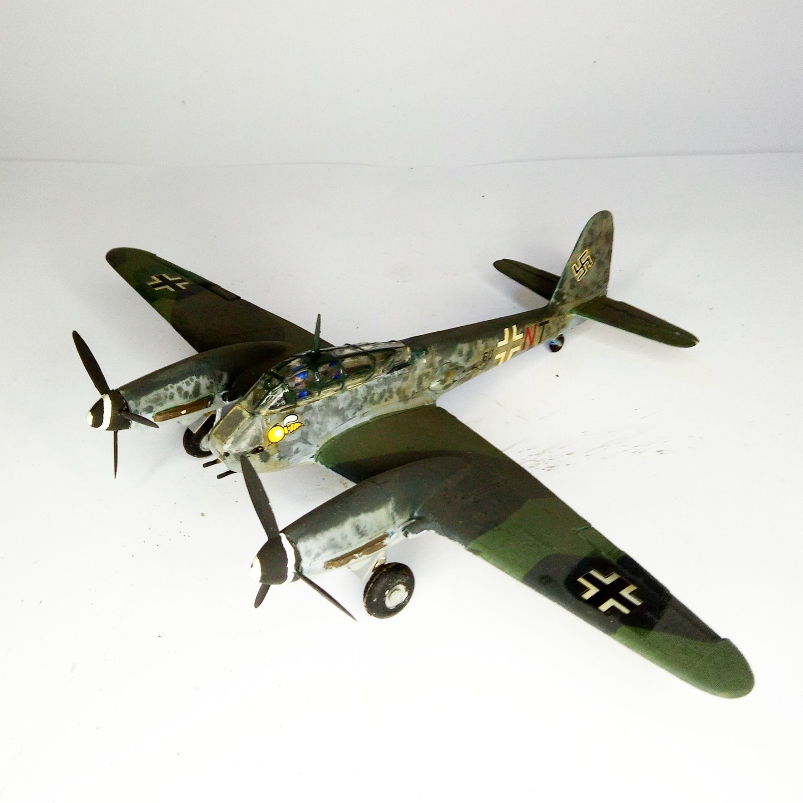

Aerei · scale model archive
Messeerschmitt Me 410
Messeerschmitt Me 410 — Kit: FROG, Scale: 1/72. Added underfuselage cannons #1/72 #FROG

Photo gallery
English description
Added underfuselage cannons
#1/72 #FROG
Descrizione italiana
Added underfuselage cannons.